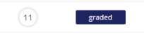
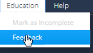
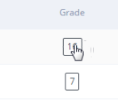
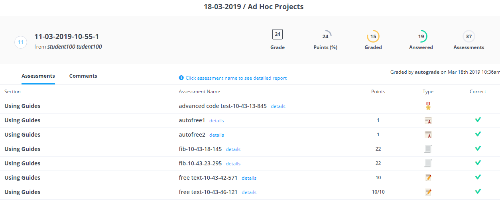
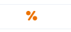
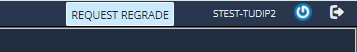
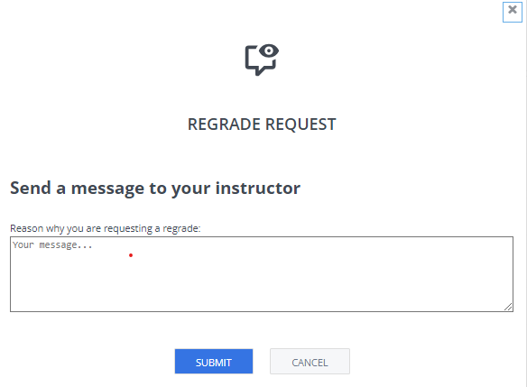
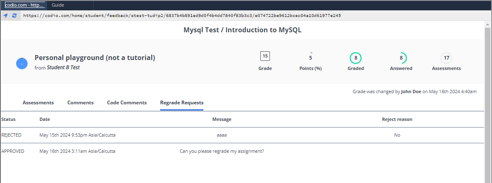

View Grades¶
When your assignment has been graded and released by your instructor, the Status column in the assignment shows graded.

You can view the grade details from the Feedback page or the Grade field in the dashboard.
Open the project and go to Education > Feedback.

Click the Grade field in the dashboard.

To view details about a grade, click the Assessment and view more information.

The Partial Point icon indicates assessments that support partial points and full points that were not awarded.

Note: If the assignment has been marked as completed, you can click the Completed button to access the grade feedback. If you want to view the assignment, click the assignment in the left panel. As the assignment is completed you will not be able to edit anything but can view the content.
If your organization uses an LMS platform, a URL to the grade detail is also passed to your LMS so you can access it from the grading area in the LMS.
Regrade Request¶
If you are not happy with your assignment grade and if this setting is enabled by your instructor, you can request for regrade to your instructors. Regrade request option will be available only after your assignment is completed/graded and grades are released for the assignment.
The Regrade Request button is available at the top menu

Once you click it, Regrade Request dialog will be opened

Enter the message you want to send to your instructors explaining the reason why you are requesting a regrade and press Submit. The message field is required, you can’t make a regrade request with a empty message field.
You can see the history of your regrade requests from the Feedback page.
